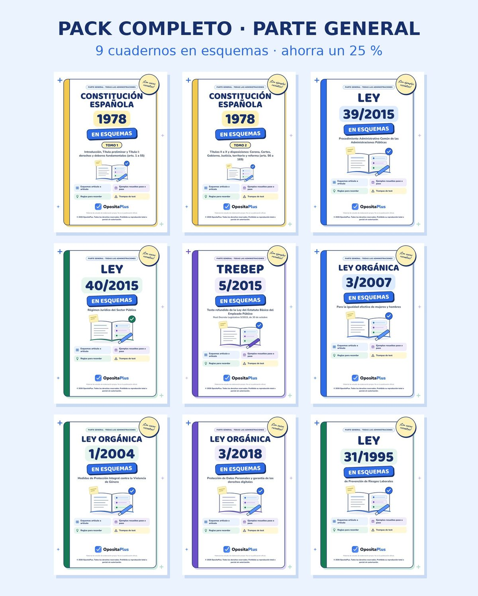

Ahorras un 25 %
Pack completo · Parte general
Pagas una vez y recibes al momento un correo con el acceso a los 9 cuadernos en PDF.
- Constitución · Tomo 1
- Constitución · Tomo 2
- Ley 39/2015
- Ley 40/2015
- TREBEP
- LO 3/2007
- LO 1/2004
- LO 3/2018
- Ley 31/1995
53,93 €
Por separado: 71,91 €
Ahorras 17,98 €
Comprar el pack